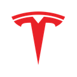

TSLANASDAQ · Tesla, Inc.
Fair value (blend propio)
$253.03
vs. $378.05 mercado · −33.1%
POSTURA DEL ANÁLISIS: NEUTRAL, CON SESGO BAJISTA — EL NEGOCIO QUE FACTURA SOSTIENE UNA FRACCIÓN DEL PRECIO Y ROBOTAXI Y OPTIMUS TODAVÍA NO TIENEN INGRESOS VERIFICABLES — el blend ponderado queda 33.1% por debajo del cierre del 9-nov-2026; para justificar el precio, Robotaxi y Optimus tendrían que valer unos $1.1 billones, 8.8 veces la última ronda de Waymo (ver Sección 13)
Este documento es análisis independiente con fines informativos y educativos. El autor no es un asesor financiero registrado (no CFA / no matriculado ante la CNV/SEC) y este contenido no constituye una recomendación de compra, venta o mantenimiento para ningún lector en particular. Ver disclosure completo al pie.
Vehículos eléctricos y almacenamiento de energía (Automotive · Energy Generation & Storage · Services) · FSD (Supervised) y Robotaxi · Optimus (robótica humanoide) · Cómputo de IA propio
Tesla cerró el trimestre finalizado el 30-sep-2026 con ingresos de $28.05 mil millones, planos contra el mismo
trimestre de 2025 (−0.2%), que había quedado inflado por las compras adelantadas antes del fin del crédito
fiscal de EE.UU. El margen bruto automotor sin créditos regulatorios subió a 18.1% (15.4% un año antes), el flujo
de caja libre volvió a ser positivo ($1.53 mil millones) y la guía de capex 2026 bajó de "más de $25 mil millones"
a unos $20 mil millones. Pero la utilidad operativa cayó 55.8%, a $718 millones (margen de 2.6%): el gasto en
investigación y desarrollo creció 69% y los créditos regulatorios se redujeron a $113 millones. Sin créditos ni el
reintegro único de aranceles, la operación ganó $158 millones. Robotaxi ya opera sin conductor de seguridad en
Austin con el Cybercab y la producción de Optimus empezó en Fremont, pero ninguna de las dos líneas publica
ingresos. El blend ponderado de cinco métodos da $253.03, 33.1% por debajo del cierre del 9-nov-2026; con los datos
de julio, la misma regla habría dado $253.46: el fair value no cambió, subió el precio.
Var. ingresos (últ. trim.)
−0.2%
01 — Resumen Ejecutivo
Mejor caja y mejor margen automotor, menos ganancia operativa, y una valuación que sigue colgada de lo que todavía no factura
El 21 de octubre de 2026, Tesla reportó ingresos del tercer trimestre de 2026 de $28.05 mil millones, apenas 0.2% por
debajo de los $28.10 mil millones del mismo trimestre de 2025. La comparación está distorsionada: en el tercer
trimestre de 2025 los compradores de EE.UU. adelantaron sus compras antes de que venciera el crédito fiscal federal
de $7,500 el 30-sep-2025, y Tesla entregó 497,099 vehículos, su récord trimestral de entonces. En el trimestre cerrado
el 30-sep-2026 entregó 486,532 (−2.1% interanual, +1.3% contra el segundo trimestre) y produjo 464,391. Por
segmento, Automotive facturó $20.56 mil millones (−3.0%), Energy Generation & Storage $2.88 mil millones
(−15.6%, en parte por reintegros de aranceles a clientes) y Services & Other $4.61 mil millones (+32.5%).
La calidad del margen automotor mejoró: el margen bruto automotor sin créditos regulatorios fue 18.1%, contra 15.4%
un año antes y 16.3% en el segundo trimestre. Una parte vino de un reintegro único: tras el fallo de la Corte Suprema
de EE.UU. de febrero de 2026 contra los aranceles dictados bajo la ley IEEPA, Tesla registró $260 millones de
reintegros en el costo de autos y $526 millones en el de energía (y devolvió $339 millones a clientes de energía).
Sin el reintegro, el margen automotor sin créditos habría sido 16.8%. Los créditos regulatorios cayeron a $113
millones (−73%), netos de una reversión de $475 millones por créditos que los compradores devolvieron por
contrato. La utilidad operativa cayó a $718 millones (−55.8%; margen de 2.6% contra 5.8%) porque el gasto en
I+D subió 69% (proyectos de IA, Optimus, chips propios y baterías) y la compensación en acciones llegó a $1.17 mil
millones, de los cuales $275 millones corresponden al plan 2025 de Elon Musk. Sin créditos y sin el reintegro neto de
aranceles, la operación ganó $158 millones.
En caja, el trimestre fue mejor de lo que sugiere la utilidad: flujo de caja operativo de $6.26 mil millones, capex
de $4.73 mil millones y flujo de caja libre de $1.53 mil millones, ayudado por $2.59 mil millones de capital de
trabajo (proveedores y anticipos de clientes). La compañía bajó la guía de capex 2026 de "más de $25 mil millones"
(10-Q del 23-jul-2026) a "más de $20 mil millones" (10-Q del 22-oct-2026; el director financiero habló de unos $20
mil millones en la llamada), firmó líneas de crédito por $30 mil millones que dice no planear usar en 2026, y avisó
que el capex de los próximos años va a seguir creciendo. La caja y las inversiones de corto plazo llegaron a $45.45
mil millones, contra una deuda de $9.52 mil millones casi toda sin recurso contra la matriz.
En las líneas nuevas, el progreso verificable es concreto pero chico: Tesla empezó a dar viajes de Robotaxi con
Cybercab (sin volante ni pedales) el 3-sep-2026 en Austin, acumuló cerca de 2 millones de millas sin supervisión al
cierre del trimestre (ocho veces más que tres meses antes) y en la llamada dijo operar en seis ciudades; las
suscripciones activas de FSD (Supervised) llegaron a 1.74 millones (+67% interanual) y más del 75% de las entregas
nuevas de Norteamérica salieron con FSD. Optimus empezó a producirse en líneas de alto volumen en Fremont. Ninguna de
las tres publica ingresos propios, y la compañía no dio guía formal para 2027. En gobierno corporativo, el directorio
formó un comité especial para explorar "profundizar la relación" con SpaceX, incluida una posible combinación de
negocios, y Tesla tiene acciones de SpaceX por $2.87 mil millones (la inversión de $2.0 mil millones acordada con xAI en
enero, que se completó en acciones de SpaceX después de la fusión entre ambas).
La valuación cambia de forma, no de fondo. El informe anterior (datos al 30-jun-2026, precio de $311.21) mostraba en
la portada un rango de $13 a $425 y apoyaba su conclusión en un DCF ponderado por probabilidad de $92.03. Este informe
lo reemplaza por un único número: un blend ponderado de cinco métodos —DCF del negocio actual (7.5%), SOTP con las
opcionalidades ponderadas por probabilidad (7.5%), comparables (25%), reversión al múltiplo propio (35%) y consenso
de analistas (25%)— que da $253.03, 33.1% por debajo del cierre de $378.05 del 9-nov-2026. Con los
datos de julio, la misma regla habría dado $253.46: el fair value prácticamente no se movió y el precio subió 21.5%.
La postura pasa de neutral a neutral, con sesgo bajista.
02 — Historia y Evolución
De challenger de nicho a la reinvención permanente de qué tipo de empresa es Tesla
Tesla fue fundada en 2003 por Martin Eberhard y Marc Tarpenning; Elon Musk se sumó en 2004 como principal inversor y
presidente del directorio, y asumió como CEO en 2008, el año del lanzamiento del Roadster. Salió a bolsa en junio de
2010 —la primera IPO de un fabricante de autos estadounidense desde Ford en 1956— y encadenó los lanzamientos que
definieron cada etapa de escala: el Model S en 2012, el Model X en 2015 y el Model 3 en 2017, cuyo ramp de producción
casi compromete la viabilidad financiera de la compañía antes de convertirse en el eléctrico más vendido del mundo.
El Model Y, lanzado en 2020, terminó de consolidar el volumen.
2020-2022 fue la etapa de consolidación bursátil: inclusión en el S&P 500 en diciembre de 2020, splits de 5:1
(agosto de 2020) y 3:1 (agosto de 2022), y la primera capitalización de un billón de dólares de una automotriz en
octubre de 2021. En 2022 Tesla presentó el prototipo de Optimus; en 2023 empezó a entregar el Cybertruck; en 2024 las
entregas anuales cayeron por primera vez y en el evento "We, Robot" se mostró el Cybercab. La narrativa corporativa
giró, desde entonces, de "fabricante de autos eléctricos" a "empresa de IA y robótica que también fabrica autos".
Ingresos anuales reportados, FY2019–FY2025, más TTM al 30-sep-2026 (miles de millones USD). Fuente: SEC EDGAR (Form 10-K) y update letters de Tesla.
2025 hizo explícita la tensión: las entregas cayeron 8.6% (a 1.64 millones), venció el crédito fiscal federal de EE.UU.
(30-sep-2025), BYD pasó a Tesla como mayor fabricante de eléctricos del mundo y la ley OBBBA eliminó las multas por
incumplir los estándares de eficiencia CAFE, que eran la razón por la que otros fabricantes le compraban créditos a
Tesla. En junio de 2025 empezó el piloto de Robotaxi en Austin y en noviembre los accionistas aprobaron el plan de
compensación de Musk atado a hitos de capitalización, robotaxis, Optimus y FSD. En 2026, los ingresos de los últimos
doce meses volvieron a superar los $100 mil millones (por segundo trimestre consecutivo al 30-sep-2026), el Model S y el
Model X dejaron de producirse a mitad de año, la compañía invirtió $2.0 mil millones en xAI (convertidos en acciones
de SpaceX) y el capex se duplicó: $13.01 mil millones en nueve meses, contra $6.13 mil millones en el mismo período
de 2025.
03 — Modelo de Negocio y Segmentos
Tres líneas que facturan, y tres apuestas (Robotaxi, FSD sin supervisión y Optimus) que todavía no tienen línea propia
Tesla reporta dos segmentos contables —Automotive & Services and Other, y Energy Generation & Storage— y tres
líneas de ingresos: Automotive (venta y leasing de vehículos, créditos regulatorios y software FSD,
que se reconoce dentro de la venta de autos), Energy Generation & Storage (Megapack, Megablock,
Powerwall y solar) y Services & Other (autos usados, mantenimiento, Supercharging, seguros). Los
viajes de Robotaxi, las suscripciones de FSD y Optimus no tienen una línea propia en el estado de resultados.
Ingresos por línea, 3T 2026 (miles de millones USD). Fuente: Q3 2026 Update.
El margen bruto automotor sin créditos regulatorios es la métrica que mejor muestra la rentabilidad del negocio de
autos tal como existe: sube y baja con el precio promedio, el costo por unidad y la mezcla, sin el aporte de los
créditos que otros fabricantes le compran a Tesla. En los últimos seis trimestres se movió entre 15.0% y 19.2%, lejos
del 25%+ de 2021-2022.
Margen bruto automotor sin créditos regulatorios (no-GAAP, cifra de Tesla), 2T25–3T26. El 3T26 incluye $260 millones de reintegro de aranceles en el costo: sin ese efecto, 16.8%.
Energy es el negocio de mejor margen y el que más depende del ciclo de inversión en centros de datos: Tesla desplegó
13.7 GWh de almacenamiento en el trimestre (12.5 GWh un año antes), arrancó la producción de la Megafactory de Texas
(capacidad planeada de 50 GWh) y despachó los primeros Megapack con celdas LFP propias, hechas en Nevada. La carta
trimestral habla de la mayor tasa de pedidos y la mayor cartera de su historia, sin publicar el monto. Services &
Other tuvo una ganancia bruta récord de $734 millones, por carga, seguros y repuestos.
Almacenamiento desplegado por trimestre, 3T24–3T26 (GWh). Fuente: update letters de Tesla.
04 — Desarrollos Recientes y Perspectiva
Autos estables, créditos que se apagan, energía con margen prestado y una plataforma que avanza sin facturar
Autos: entregas casi planas contra una base inflada, precio estable y costo por unidad más bajo
Las 486,532 entregas del tercer trimestre quedaron 2.1% abajo de las 497,099 del mismo trimestre de 2025, que había
sido un pico artificial: el crédito fiscal federal de $7,500 para eléctricos venció el 30-sep-2025 y la demanda de
EE.UU. se adelantó a ese trimestre (en el cuarto trimestre de 2025 las entregas cayeron a 418,227 y en el primero de
2026 a 358,023). En los nueve meses de 2026, Tesla entregó unos 1.32 millones de vehículos, 8.8% más que los 1.22
millones de los nueve meses de 2025. El Model 3/Y entregó 478,237 unidades (−0.6%); los "otros modelos" cayeron a
8,295 (−48%) tras el fin de la producción del Model S y el Model X a mitad de año.
Entregas trimestrales, 3T24–3T26 (miles de vehículos). El 3T25 incluye las compras adelantadas antes del fin del crédito fiscal de EE.UU. Fuente: reportes de producción y entregas de Tesla.
El ingreso por venta de autos dividido por las entregas al contado (sin leasing) da $41,896 por vehículo, casi igual
que los $41,816 del tercer trimestre de 2025; Tesla aclara que, sin el efecto cambiario (+$0.3 mil millones de
ingresos por el dólar más débil) y la mezcla, el precio promedio bajó, compensado por más ingresos de FSD. El costo de
venta por vehículo bajó a $34,548 desde $35,667 (−3.1%), con ayuda de los $260 millones de reintegro de
aranceles (unos $540 por unidad). El inventario cerró en 11 días de oferta (10 un año antes) y la compañía dice tener
la mayor cartera de pedidos de autos en cuatro años; la limitante, según la carta, es la disponibilidad de baterías,
no la demanda. El Tesla Semi entró en producción en volumen en Nevada (capacidad de 25,000 unidades) y el nuevo
Roadster se presentó el 15-oct-2026.
Créditos regulatorios: de un tercio de la ganancia operativa a casi nada
Los créditos regulatorios —que Tesla vende a fabricantes que no cumplen los estándares de emisiones y eficiencia—
sumaron $113 millones en el trimestre, contra $417 millones un año antes, y $639 millones en nueve meses, contra
$1.45 mil millones (−56%). Los $113 millones son netos de una reversión de $475 millones por créditos ya
entregados que los compradores devolvieron por contrato: el ingreso bruto del trimestre fue de unos $588 millones. El
10-Q explica que "acciones gubernamentales y regulatorias recientes restringieron ciertos programas de créditos";
en EE.UU., la ley OBBBA de julio de 2025 llevó a cero las multas por incumplir los estándares CAFE. Quedan $384
millones de obligaciones contratadas por reconocer, $201 millones de ellas en los próximos doce meses.
Ingresos por créditos regulatorios, 3T24–3T26 (millones USD). El 3T26 es neto de una reversión de $475 millones. Fuente: update letters de Tesla.
El peso de esta línea en la ganancia es lo que importa: en los doce meses al 30-sep-2026, los créditos ($1.18 mil
millones) equivalen al 34% de la utilidad operativa ($3.47 mil millones); en 2024 eran el 39%. Como el costo asociado
es casi nulo, cada dólar que desaparece sale directo del margen. Por eso este informe calcula la reversión histórica
sobre resultados sin créditos (Sección 13).
Energía: más gigavatios, menos precio, y un margen de 33% que incluye un reintegro único
Los ingresos de energía cayeron 15.6%, a $2.88 mil millones, pese a desplegar 9.6% más gigavatios-hora (13.7 contra
12.5). El 10-Q lo atribuye a reintegros de aranceles a clientes de Megapack ($339 millones), un precio promedio por
Megapack más bajo y menos Powerwall y solar. La ganancia bruta de $954 millones (margen de 33.1%) incluye $526
millones de aranceles reintegrados en el costo; sin ese efecto neto, la ganancia bruta fue de unos $767 millones
(23.8%), 28.5% menos que los $1.07 mil millones del tercer trimestre de 2025. En la llamada, Tesla dijo esperar
mejores precios y márgenes y que la producción de Megapack de 2027 está casi vendida (comentario de la empresa, sin
cifra en la carta). SpaceX es cliente: le compró Megapacks por $626 millones en nueve meses y le debía $729 millones al
30-sep-2026.
Robotaxi y FSD: lo verificable y lo anunciado, por separado
Suscripciones activas de FSD (millones), 3T25–3T26. Incluye pago único y mensual, sin pruebas gratis (definición del plan 2025 del CEO). Fuente: update letters de Tesla.
Optimus: producción iniciada, sin unidades publicadas ni ventas a terceros
La carta del tercer trimestre dice que la producción de Optimus empezó en las líneas de alto volumen de Fremont, que
son "los primeros robots con calidad de producción" y que el proceso es apto para un producto comercial; la capacidad
de California figura como "early ramp", sin número, y la de Texas como "en construcción". Tesla no publicó unidades
producidas. Lo demás es promesa: Musk dijo que la mayor parte de una línea de un millón de unidades por año ya está en
Fremont, que llegar a 20,000 robots por semana va a llevar "al menos un año", que las entregas a otras empresas
empezarían hacia fines de 2027 (primero industriales) y que el chip AI5 se integraría en Optimus hacia abril de 2027.
Capex, guía y 2027
El capex de nueve meses fue de $13.01 mil millones, contra $6.13 mil millones en 2025; la guía de unos $20 mil
millones implica unos $7.0 mil millones en el cuarto trimestre, 135% más que los $8.53 mil millones de todo 2025.
Se destina a cómputo (Cortex 1 y 2 en Texas, con meta de 400 MW a fin de año), la fábrica de chips de Austin (equipos
desde 2027), baterías, la flota propia de Robotaxi, Optimus y carga. Para 2027 no hay guía formal de volumen, margen
ni capex: el director financiero dijo que el capex "va a seguir creciendo" y que el gasto operativo crecerá hasta que
se comercialicen los productos nuevos; Musk dijo que la inversión en Terafab (la fábrica de chips que se comparte con
SpaceX, con reparto de costos aún sin definir) se vuelve "más significativa" en 2027 y de "decenas de miles de
millones" hacia 2028. La meta de largo plazo que repitió Musk es producir unos 5 millones de vehículos por año hacia
2030, sin un plan publicado.
05 — Estados Financieros
El trimestre línea por línea: margen bruto arriba, gasto en IA más arriba
La utilidad operativa del trimestre (+$320 millones contra el segundo trimestre) mejoró por el margen bruto, pero
sigue 55.8% abajo del año anterior: el gasto operativo creció 39% interanual, a $4.78 mil millones. Debajo de la línea
operativa, la utilidad neta GAAP de $787 millones incluye una pérdida de $142 millones por la acción de SpaceX (que en
el segundo trimestre había dado una ganancia de $1.0 mil millones), una ganancia de $288 millones por el bitcoin y una
tasa impositiva de 16%. Para la valuación usamos una utilidad "núcleo" que saca créditos regulatorios, el reintegro
de aranceles, bitcoin, SpaceX, partidas impositivas puntuales y reestructuraciones, pero no la
compensación en acciones: en los doce meses al 30-sep-2026 da $1.47 mil millones, $0.41 por acción (contra $0.91 de
EPS GAAP y $1.72 de EPS no-GAAP).
Margen bruto y margen operativo trimestral (GAAP), 3T25–3T26. Fuente: update letters de Tesla.
06 — Deuda y Balance
Caja neta de $35.9 mil millones, $30 mil millones de crédito sin usar y una acción de SpaceX en el activo
El balance no tiene riesgo de solvencia: la caja neta es de $35.9 mil millones y, de la deuda, solo $2 millones son
con recurso contra Tesla; el resto son bonos respaldados por autos y contratos de energía ($3.3 mil millones) y una
línea de capital de trabajo en China ($5.97 mil millones). El 29-sep-2026 Tesla firmó tres líneas sin garantía por $30
mil millones —un préstamo a tres años de $20 mil millones con desembolsos durante 18 meses, una línea revolvente a
cinco años de $8 mil millones y otra a 364 días de $2 mil millones—, que exigen mantener al menos $5 mil millones de
liquidez, y canceló la línea anterior de $5 mil millones. Al 30-sep no había nada usado. Es la señal más clara de
cómo piensa financiar el ciclo de inversión de 2027-2028: con deuda si hace falta, no solo con caja propia.
07 — Flujo de Caja y Capital Allocation
Flujo de caja libre positivo en el trimestre, pero a la mitad que un año antes en doce meses
El flujo de caja operativo de $6.26 mil millones del trimestre incluye $2.59 mil millones de capital de trabajo a
favor, sobre todo $3.99 mil millones más de cuentas a pagar y $1.26 mil millones más de anticipos de clientes. Sin esa
ayuda, el flujo de caja libre del trimestre habría sido negativo. En doce meses, el flujo de caja libre bajó a $3.30
mil millones desde $6.83 mil millones porque el capex casi se duplicó. Tesla no paga dividendos ni recompra
acciones, y en el primer trimestre usó $2.0 mil millones de caja en la inversión en xAI/SpaceX.
Capex trimestral, 3T25–3T26 (miles de millones USD). Fuente: Q3 2026 Update.
Flujo de caja libre trimestral, 3T25–3T26 (miles de millones USD). Fuente: Q3 2026 Update.
08 — Comparables de Industria
Ningún comparable explica el múltiplo: los autos cotizan entre 6 y 12 veces, Alphabet (dueña de Waymo) a 19
Usamos cuatro fabricantes de autos —Toyota, General Motors, Ford y BYD— y Alphabet, por Waymo, el único negocio de
robotaxis a escala comercial que cotiza (dentro de una compañía mucho más grande). Comparamos el P/E sobre la
ganancia por acción esperada para 2027, que es la forma en que el consenso mira a todos los del panel.
P/E 2027 de los comparables. TSLA (175x) queda fuera de escala.
Toyota es el fabricante más grande del mundo y el más rentable del panel tradicional, con híbridos
como puente; cotiza a 9.8 veces. General Motors y Ford son el piso del sector (6.1x
y 6.6x): negocios maduros, cíclicos y con eléctricos que todavía pierden plata; GM además opera Super Cruise y cerró
su propio programa de robotaxis (Cruise) en 2024. BYD, el mayor fabricante de eléctricos por
volumen, cotiza a 11.9 veces su ganancia de 2027, con un crecimiento esperado alto. Alphabet
(18.7x) entra por Waymo, pero Waymo es una parte chica del valor de Alphabet; su múltiplo infla el promedio del panel
sin que eso diga mucho del valor de un robotaxi. Por eso la Sección 13 muestra el blend con el panel completo, sin
Alphabet y sin GM ni Ford: el número final casi no cambia, porque el peso de este método es chico frente a la
distancia entre Tesla y cualquiera de ellos.
09 — Gobierno Corporativo y Estructura Accionaria
Un plan de compensación atado a una capitalización de $2 a $8.5 billones y una relación con SpaceX cada vez más estrecha
Elon Musk (proxy 2026)
19.8%
699.6 millones de acciones según el proxy del 19-oct-2026, sin contar las 423.7 millones del plan 2025 (aún no ganadas). Incluye 286.4 millones restringidas del plan 2018.
Mayor institucional
Vanguard 5.3%
210.8 millones de acciones (proxy 2026).
Presidenta del directorio
Robyn Denholm
Musk es CEO pero no preside el directorio. Ambos se presentan a reelección el 3-dic-2026.
Plan 2025 del CEO
423.7M acciones
12 tramos de 35.3 millones; dilución potencial de 12.0% sobre las acciones ya existentes. Al recibirlas, Musk paga $334.09 por acción (o se descuentan).
Condición de cada tramo
Capitalización + hito
Capitalización de $2.0 a $8.5 billones (unos $506 por acción el primer tramo) y 1 a 12 hitos: 20M autos, 10M suscripciones FSD, 1M robots, 1M robotaxis, EBITDA ajustado de $50 mil millones a $400 mil millones.
Avance verificable
10.2M autos · 1.74M FSD
Tesla considera probable solo el hito de 20 millones de autos; ningún tramo está ganado al 30-sep-2026.
Costo contable del plan
$9.74B + hasta $120B
$9.74 mil millones a reconocer en 8.9 años por el hito probable, más $105.8-$120.4 mil millones si los demás hitos pasaran a ser probables (no-caja).
SpaceX / xAI
$2.87B en acciones
Inversión de $2.0 mil millones en xAI (acuerdo de ene-2026) convertida en acciones de SpaceX tras la fusión; restricción de venta hasta dic-2026.
Comité especial
Posible combinación
El directorio formó un comité de directores independientes para explorar "profundizar la relación" con SpaceX, incluida una combinación de negocios (10-Q, Ítem 5).
El plan de Musk es, a la vez, el mayor incentivo y la mayor dilución potencial de la historia de Tesla: si se ganara
completo, sumaría 423.7 millones de acciones (12.0% más). Pero no hay dilución sin creación de valor: el primer tramo
exige una capitalización promedio de $2 billones —unos $506 por acción con las acciones en circulación— y el último,
$8.5 billones. En los escenarios de este informe (Sección 13) Tesla no llega a ese umbral, así que la valuación por
acción usa las 3,541 millones de acciones diluidas sin el plan; con las 3,953 millones en circulación (que ya incluyen
las acciones restringidas del plan), el DCF del negocio actual bajaría de $66.16 a $59.27.
La relación con las otras compañías de Musk es el tema de gobierno a seguir. En enero de 2026 Tesla acordó invertir
$2.0 mil millones en acciones preferidas de xAI; en febrero SpaceX absorbió a xAI y la inversión se completó en marzo
como acciones clase A de SpaceX (menos del 1%), que cotizan desde su salida a bolsa y valían $2.87 mil millones al
30-sep-2026. SpaceX además compra Megapacks ($626 millones en nueve meses), y Tesla y SpaceX planean repartir el costo
de Terafab. El 10-Q agrega que el directorio formó un comité especial para estudiar una posible combinación con
SpaceX, sin garantía de que ocurra y sujeta a voto de los accionistas. El 10-Q también menciona demandas derivadas
de accionistas sobre la relación con xAI y X. El temario de la junta anual del 3-dic-2026 es acotado: reelección de
Musk, Denholm y JB Straubel, voto consultivo sobre la compensación de 2025 y ratificación de PwC.
10 — Registro de Riesgos
Qué podría cambiar esta lectura
11 — Catalizadores
Agenda
12 — Modelo Financiero Proyectado y Momentum de Estimados
EPS no-GAAP arriba del consenso, ingresos en línea, y un consenso de precio objetivo apenas 9% sobre el mercado
EPS no-GAAP del 3T26: consenso previo según dos proveedores y resultado real.
La acción cayó 3.1% la sesión siguiente al reporte ($386.47 el 21-oct; $374.58 el 22-oct). Entre el 4 y el 5 de
noviembre bajó a $343.69 (la prensa lo atribuyó, según el medio, al resultado de las elecciones legislativas de EE.UU.
o a una venta generalizada de acciones de IA) y cerró en $378.05 el 9-nov-2026. Para 2026, el consenso
(stockanalysis.com, 44 analistas) espera ingresos de $107.86 mil millones (+13.7%) y un EPS no-GAAP de $1.72 (rango
$1.17-$2.28); para 2027, ingresos de $122.46 mil millones (+13.5%) y EPS de $2.16 (+25.6%). La calificación está
partida: 15 "compra fuerte", 6 "compra", 21 "mantener", ninguna "venta" y 2 "venta fuerte". El precio objetivo
promedio es $413.10 (mediana $436; mínimo $128.11, máximo $600), 9.3% sobre el cierre del 9-nov. No existe consenso
público separado de ingresos de Robotaxi, FSD u Optimus; para los años sin consenso remitimos a los supuestos
explícitos del DCF (Sección 13).
13 — Valuación: Cinco Métodos y el Fair Value
Un solo número: el blend ponderado da $253.03, 33.1% por debajo del precio
El informe anterior mostraba en la portada un rango ($13-$425) y apoyaba la conclusión en un DCF ponderado por
probabilidad ($92.03), con el consenso y la reversión fuera del promedio. Este informe aplica la regla del desk: un
fair value único, que sale de un promedio ponderado explícito de cinco métodos, con el consenso y la reversión siempre
adentro. Los pesos son:
Método 1 — DCF del negocio actual, tres escenarios
Proyectamos cinco años (año 1 = 2027) y un valor terminal. El año 1 parte del consenso de ingresos 2027 ($122.46 mil
millones, +13.5%); después, el crecimiento desacelera por escenario. El margen de flujo de caja operativo del caso
Base arranca en 18%, el nivel real de los últimos doce meses (18.1%) y de los nueve meses de 2026 (18.9%), y sube a
22% por apalancamiento operativo, energía y software. El capex del año 1 va en dólares e incluye toda la inversión
guiada —también la de IA, Optimus y la flota—: el negocio actual la paga, aunque todavía no genere ingresos. Eso es
deliberado: el valor de esas líneas se suma en el Método 2. El WACC Base es 11.0%, el mismo del informe anterior
(implica una beta de 1.23 sobre un bono del Tesoro a 10 años de 4.86%; con la beta de 1.79 que citaba aquel informe
daría 13.8%, y la grilla de sensibilidad llega a 12%).
El Bear arranca con un margen de OCF de 16%, por debajo del 18.1% TTM, por tres razones documentadas: el TTM incluye
$1.18 mil millones de créditos regulatorios que se están apagando, $2.59 mil millones de capital de trabajo a favor en
el tercer trimestre y el reintegro único de aranceles; sin créditos ni ese capital de trabajo, el margen de los últimos
doce meses habría sido de 14.4%. Las probabilidades 25/45/30 dan un valor esperado de $71.29 (promedio simple:
$70.38). El caso Base ($66.16) queda 82.5% por debajo del mercado. Antes de aceptarlo, revisamos lo que pide la regla
del desk: el margen de OCF del año 1 está anclado en el OCF real, el capex del año 1 está en línea con la guía y con
el comentario de que va a crecer, y los ingresos del año 1 son los del consenso. El resultado no viene de un supuesto
sin anclar: el negocio que ya factura —con el capex que la compañía misma se fijó— no genera la caja que el precio
supone. El 85% del valor sale del terminal, por encima del umbral de 65%-70% que el desk marca como zona sensible.
DCF inverso. Con el mismo WACC, el mismo terminal y la trayectoria de capex del Base, sostener
$378.05 exige que el margen de OCF llegue a 94.2% en el año 5 (contra 22% en el Base), o —con el margen del Base— que
los ingresos crezcan 75.4% por año entre 2028 y 2031, hasta $1.16 billones en el año 5, más que los ingresos anuales
de cualquier empresa del mundo. Ninguna de las dos cosas describe un negocio de autos: el precio solo cierra si una
parte grande del valor viene de algo que todavía no factura. Eso es lo que mide el Método 2.
Método 2 — SOTP: el negocio actual más Robotaxi y Optimus, ponderados por probabilidad
Al valor empresa del DCF del negocio actual le sumamos Robotaxi y Optimus usando la última transacción privada de su
comparable más directo —Waymo, $126 mil millones en su ronda de $16 mil millones de febrero de 2026; Figure AI, $39
mil millones en su Serie C de septiembre de 2025—, multiplicada por una probabilidad explícita, porque ninguna de las
dos líneas tiene ingresos verificables. Después sumamos la caja neta y las inversiones no operativas: la deuda se
resta una sola vez, dentro de la caja neta. FSD y energía no se suman aparte porque ya facturan y están dentro del
DCF; el capex de las opcionalidades tampoco se resta otra vez, porque ya lo paga el DCF del negocio actual.
Por qué esas probabilidades. Robotaxi recibe 50%: desde julio hubo progreso verificable (viajes sin
supervisor con un vehículo propio sin volante, millas sin supervisión multiplicadas por ocho, capacidad de producción
de Cybercab en marcha), pero Tesla no publica viajes ni ingresos, sus ~2 millones de millas sin supervisión son una
fracción de las de Waymo y la expansión fuera de Texas todavía no tiene fecha ni permiso verificado en California.
Optimus recibe 30%: la producción empezó, pero no hay unidades publicadas, las ventas a terceros serían recién a
fines de 2027 y la propia valuación de Figure AI sale de una sola ronda privada. El Bear usa 25%/15% y el Bull
100%/60%, con el DCF de cada escenario: el SOTP va de $49.96 a $147.75. Si Robotaxi valiera entre 25% y 150% de
Waymo con todo lo demás fijo, el SOTP Base iría de $78.36 a $122.84.
SOTP inverso. Al cierre del 9-nov-2026, la capitalización diluida es de $1.34 billones. Si el negocio
actual vale lo que dice el DCF Base y se le suma la caja, el mercado le está asignando unos $1.10 billones a las
opcionalidades: el 82.5% del precio, 8.8 veces la valuación de Waymo y 6.7 veces Waymo y Figure AI juntas. Los bancos
que defienden el precio modelan esas líneas a varias décadas con márgenes de software; el informe anterior citaba,
por ejemplo, un SOTP de Morgan Stanley de $425 con $125 por acción para Robotaxi (cobertura reportada en prensa en
julio de 2026; no verificamos si cambió). Es una referencia externa, no un método de este blend.
Método 3 — Comparables
Aplicamos el P/E 2027 de los comparables (Sección 8) al EPS 2027 de consenso de Tesla ($2.16). El resultado formal es
el promedio de los cinco (10.6x): $22.90. Como pide la regla, mostramos qué pasa si se sacan los que
inflan o hunden el promedio:
El blend se mueve menos de $3 con cualquier panel: entre el mejor y el peor comparable hay $27 por acción, contra
$378 del precio. El método deja una sola conclusión —ningún fabricante, ni siquiera Alphabet, cotiza a algo parecido
a 175 veces su ganancia— y por eso su peso de 25% le resta al blend unos $89 frente al precio.
Método 4 — Reversión al múltiplo propio, sin créditos ni extraordinarios
Calculamos el múltiplo al que cotizó Tesla en cada uno de los últimos ocho cierres trimestrales con datos propios:
precio de cierre × acciones diluidas, menos caja, más deuda, menos bitcoin y SpaceX, dividido por el Adjusted EBITDA
de los doce meses previos sin créditos regulatorios, sin reestructuraciones y sin el reintegro de aranceles.
No usamos múltiplos de proveedores. El promedio (96.2x) aplicado al EBITDA núcleo de los doce meses al 30-sep-2026
($13.53 mil millones), más la caja neta y las inversiones, da $378.64.
Usamos EV/EBITDA y no P/E porque la ganancia núcleo por acción cayó de $1.42 a $0.41 en ocho trimestres y el P/E
resultante va de 210x a 858x: el denominador se acerca a cero y deja de servir como ancla. El EV/EBITDA, en cambio, se
movió entre 66x y 119x con un EBITDA núcleo estable entre $12.9 y $14.2 mil millones. Con la ventana de los últimos
cuatro cierres (100.3x) la reversión daría $394.54 y el blend $258.60; con el P/E núcleo promedio (477x) daría $197.49
y el blend $189.63. Hay que leer este método por lo que es: Tesla cotizó en promedio a 96 veces su EBITDA sin créditos,
y la reversión dice que, a ese múltiplo, el precio está donde siempre estuvo. No dice que ese múltiplo esté
justificado por la caja del negocio; para eso están los Métodos 1 y 2.
Método 5 — Consenso de Wall Street
El precio objetivo promedio de 44 analistas relevados por S&P Global (vía stockanalysis.com, 9-nov-2026) es
$413.10, 9.3% sobre el cierre; la mediana es $436 y el rango va de $128.11 a $600. Es el único método
por encima del precio y, a la vez, el menos transparente: no sabemos cuánto de cada precio objetivo sale de flujos de
caja de Robotaxi y Optimus modelados a varias décadas. La calificación (21 compras contra 21 "mantener" y 2 ventas
fuertes) muestra que tampoco hay acuerdo entre analistas.
El blend: $253.03
El blend queda lejos del precio, y lo decimos con un solo número: $253.03, 33.1% por debajo. Los dos
métodos de mercado (reversión y consenso) quedan cerca o arriba del precio; los tres que miran la caja del negocio y
lo que pagan sus pares quedan entre 77% y 94% abajo. La distancia entre ambos grupos es, en una cifra, el valor que el
mercado le asigna a Robotaxi, FSD sin supervisión y Optimus.
Contra el informe anterior
La reconstrucción usa los valores publicados donde el método no cambió, recalcula el SOTP con las probabilidades
nuevas sobre los datos de julio y recalcula la reversión con la regla nueva (EV/EBITDA propio sin créditos, ocho
cierres del 3T24 al 2T26, 92.9x). Con la reversión de proveedores del informe anterior, el blend de julio habría dado
$182.88. El salto respecto del número central de julio ($92.03 → $253.03) es metodológico: el consenso y la reversión,
que entonces quedaban afuera, ahora pesan 60%. Con la misma regla, el fair value no cambió (−0.2%); lo que
cambió es el precio (+21.5%), y por eso la distancia pasa de −18.6% a −33.1%.
Football field: rango de cada método (DCF y SOTP: Bear a Bull; comparables: del comparable más barato al más caro; reversión: múltiplo mínimo y máximo de la ventana; consenso: precio objetivo mínimo y máximo). Línea roja: mercado; línea azul: blend.
Postura. Con el blend 33.1% abajo del precio, la regla del desk no admite una postura neutral pura:
pasa a neutral, con sesgo bajista. No es una apuesta a que Robotaxi fracase: es la constatación de
que, con lo que se puede verificar al 9-nov-2026, el precio descuenta un éxito que vale 8.8 Waymos. Lo que tendría que pasar
para que el número suba es concreto: ingresos de Robotaxi informados por separado, viajes sin supervisor fuera de
Texas con permiso, FSD sin supervisión en autos de clientes y ventas de Optimus a terceros. Cada una de esas pruebas
sube la probabilidad del Método 2 y, con el tiempo, el EBITDA sobre el que se calcula la reversión.
14 — Limitaciones del Modelo
Qué asume este análisis, y dónde puede fallar
El DCF del negocio actual carga todo el capex guiado, incluido el de líneas que todavía no facturan; si una parte de
esa inversión se recupera dentro del negocio de autos (por ejemplo, baterías propias que bajan el costo por unidad),
el Base subestima el valor. El 85% de su valor sale del terminal. El SOTP depende de dos transacciones privadas de un
solo momento (Waymo, febrero de 2026; Figure AI, septiembre de 2025) y de probabilidades que son juicio del desk,
declaradas para que el lector las cambie. La reversión usa el Adjusted EBITDA de Tesla, que excluye la compensación
en acciones (que creció con el plan 2025 del CEO): si se restara, el múltiplo histórico sería más alto y el EBITDA
actual más bajo. La utilidad núcleo usa una tasa uniforme de 22% para netear partidas. Los comparables usan EPS de
consenso de un solo proveedor y, para Toyota y BYD, tipos de cambio del 9-nov-2026.
Datos que no pudimos verificar contra un documento de Tesla: el tamaño de la flota de Robotaxi, la lista de ciudades
(Tesla dijo "seis" sin nombrarlas en el material oficial), los registros del DMV de Texas, el ingreso anualizado de
FSD, las unidades de Optimus producidas y la cartera de pedidos de energía para 2027. El consenso previo del
trimestre varía según el proveedor. La cotización de SpaceX y el detalle de su salida a bolsa se toman del 10-Q de
Tesla (que la menciona) y no de un documento de SpaceX.
Documento elaborado a partir de fuentes públicas: SEC EDGAR (Form 8-K Ex. 99.1 del 21-oct-2026, Form 10-Q del
22-oct-2026, Form 8-K del 2-oct-2026 y del 29-sep-2026, Form DEF 14A del 19-oct-2026, update letters de trimestres
anteriores), transcripción de la llamada del 21-oct-2026 (Motley Fool) y recap de Not a Tesla App,
stockanalysis.com (consenso de TSLA y de los comparables), Yahoo Finance (precios y tipos de cambio), y prensa sobre
las rondas de Waymo y Figure AI y sobre la operación de Robotaxi. Cifras fundamentales con fecha de corte en el
trimestre cerrado el 30-sep-2026; precios al cierre del 9-nov-2026.
Sobre el autor y la naturaleza de este documento: este informe es un análisis independiente elaborado
por Manfredi Investment Research & Markets con fines exclusivamente informativos y educativos. El autor no es un
asesor de inversión registrado, no está matriculado ante la Comisión Nacional de Valores (CNV), la SEC, ni ningún otro
organismo regulador equivalente, y no mantiene una relación de asesoramiento financiero personalizado con el lector.
Ninguna cifra de este documento —incluido el "fair value" de portada, los escenarios de DCF y el blend de la Sección
13— constituye una recomendación de compra, venta o mantenimiento para ningún lector en particular, ni considera la
situación financiera, los objetivos o el perfil de riesgo individual de quien lo lee. Los escenarios son estimaciones
propias sujetas a los supuestos declarados en la Sección 13, y no representan guidance oficial de ninguna de las
compañías mencionadas salvo donde se cita de forma directa y atribuida. Verificar cifras contra el 10-Q/10-K más
reciente de cada compañía, y consultar a un asesor financiero matriculado, antes de tomar cualquier decisión de
inversión.